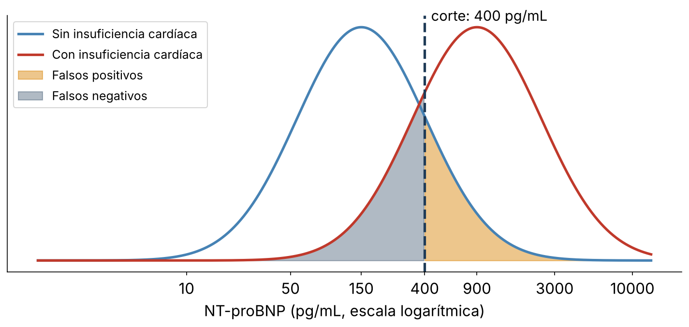
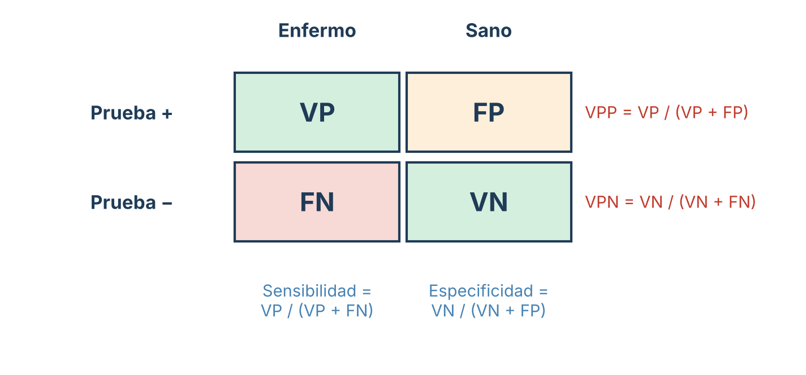
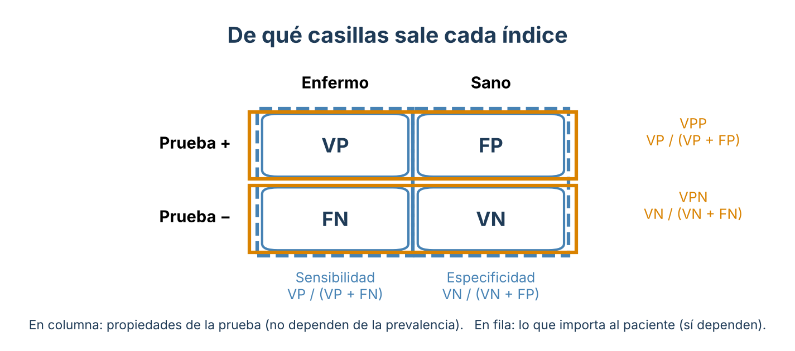
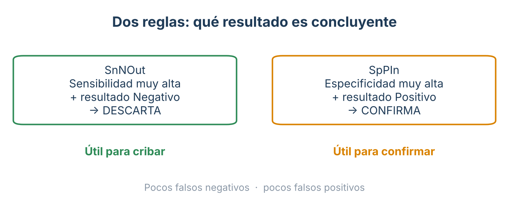
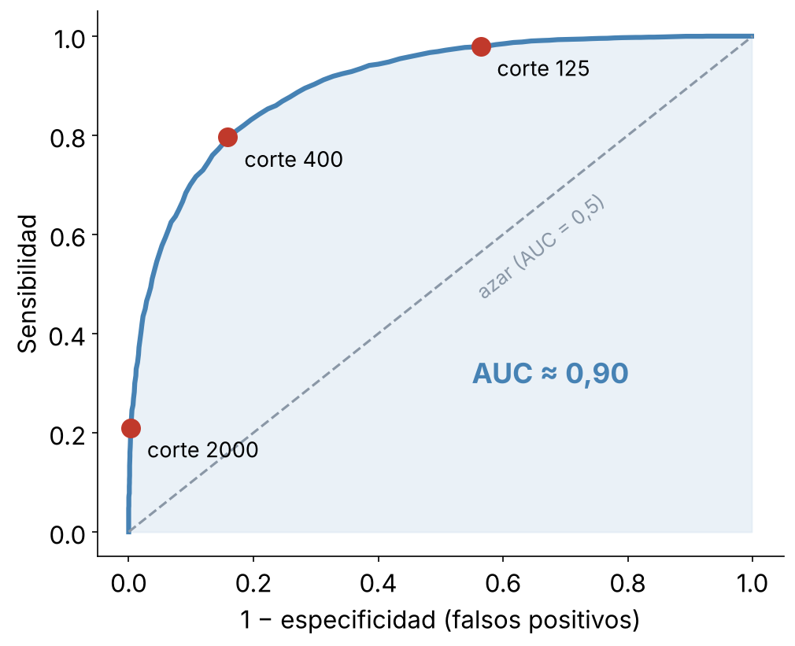

Bioestadística (1964) · Grado en Medicina · Curso 2027-2028
Tema 160Evaluación de pruebas diagnósticas y de cribado: sensibilidad, especificidad y valores predictivos
Módulo 4. Probabilidad
Evaluación: el examen del Módulo 4 se hace a mano. Resuelve primero cada ejercicio con papel y calculadora, y usa el código solo para comprobar.
Fernando Borrás Rocher · Universidad Miguel Hernández de Elche · CC BY 4.0
Objetivos de aprendizaje
Al terminar esta sesión serás capaz de:
- Construir la tabla 2 × 2 de una prueba diagnóstica frente a un patrón de referencia.
- Calcular e interpretar sensibilidad, especificidad, valores predictivos y cocientes de probabilidad.
- Explicar por qué los valores predictivos dependen de la prevalencia y la sensibilidad y la especificidad no.
- Elegir un punto de corte para una prueba cuantitativa según su finalidad: cribado o confirmación.
- Construir e interpretar una curva ROC y su área bajo la curva.
- Reconocer los sesgos más frecuentes en los estudios de pruebas diagnósticas.
Cómo usar esta presentación
Usa el selector de arriba para dar el tema en una sesión completa o en dos sesiones intercaladas.
🎓 Sesión de clase magistral
- 1. Caso clínico de partida 5 min
- 2. Conceptos clave 10 min
- 5. Autoevaluación 5 min
Explica los conceptos, haz la pausa activa y cierra con las ideas clave.
💻 Sesión de Colab
- 3. Demostración: evaluar una prueba 20 min
- 4. Práctica en la app Bioestadística 10 min
- 5. Autoevaluación 5 min
Cada estudiante abre su copia del cuaderno, predice el resultado y después ejecuta la celda.
Teclas: ← → para pasar · N notas del profesor · M cambiar de modo · F pantalla completa · Esc índice.
1. Caso clínico de partida
NT-proBNP: ¿dónde ponemos el punto de corte?

- Enfermos y sanos se solapan: ningún corte separa perfectamente.
- Bajar el corte → más sensibilidad y más falsos positivos; subirlo → más especificidad y más falsos negativos.
2. Conceptos clave
2.1 La tabla 2 × 2
La tabla 2 × 2 y sus cuatro índices

- Sensibilidad y especificidad se leen por columnas (según la enfermedad).
- Los valores predictivos se leen por filas (según el resultado) y dependen de la prevalencia.
2. Conceptos clave
2.2 Los índices

| Índice | Fórmula | Pregunta que responde | ¿Depende de la prevalencia? |
|---|---|---|---|
| Sensibilidad | VP / (VP + FN) | De los enfermos, ¿cuántos detecta? | No |
| Especificidad | VN / (VN + FP) | De los sanos, ¿cuántos descarta? | No |
| Valor predictivo positivo (VPP) | VP / (VP + FP) | Si da positivo, ¿qué probabilidad hay de enfermedad? | Sí |
| Valor predictivo negativo (VPN) | VN / (VN + FN) | Si da negativo, ¿qué probabilidad hay de no tenerla? | Sí |
| LR+ | Se / (1 − Sp) | ¿Cuánto multiplica un positivo las odds de enfermedad? | No |
| LR− | (1 − Se) / Sp | ¿Cuánto multiplica un negativo las odds de enfermedad? | No |
La sensibilidad y la especificidad son propiedades de la prueba. Los valores predictivos son lo que le importa al paciente. Dependen de la prevalencia, como vimos con el teorema de Bayes en el Tema 150.
2. Conceptos clave
2.3 Dos reglas para recordar

- SpPIn: una prueba muy Specífica, si es Positiva, confirma (rule in). Útil para confirmar**.
- SnNOut: una prueba muy Sensible, si es Negativa, descarta (rule out). Útil para cribar** y descartar.
2. Conceptos clave
2.4 Punto de corte y curva ROC
La curva ROC resume todos los puntos de corte

- Cada punto es un corte: sensibilidad frente a 1 − especificidad.
- El área bajo la curva (AUC) es la probabilidad de que un enfermo tenga un valor mayor que un sano.
Pausa activa
Piensa 30 segundos, comenta con quien tienes al lado y vota.
En 200 enfermos, la prueba es positiva en 180. ¿Qué índice has calculado con 180/200?
En la sesión de Colab
Lo que acabas de ver se comprueba con datos en el cuaderno del Tema 160.
- Abre el cuaderno y guarda tu copia: Archivo → Guardar una copia en Drive.
- Ejecuta la celda de configuración.
- Ve a la demostración y predice cada resultado antes de ejecutar.
3. Demostración: evaluar una prueba
3.1 Una tabla 2 × 2 a mano
▶ En tu cuaderno: 3.1 Una tabla 2 × 2 a mano. Antes de ejecutar, escribe qué esperas obtener.
Un estudio evalúa el NT-proBNP con un punto de corte de 125 pg/mL en 400 pacientes con disnea. La referencia confirma insuficiencia cardiaca en 100.
| IC | No IC | Total | |
|---|---|---|---|
| NT-proBNP ≥ 125 | 95 | 90 | 185 |
| NT-proBNP < 125 | 5 | 210 | 215 |
| Total | 100 | 300 | 400 |
A mano: Se = 95/100 = 0,95 · Sp = 210/300 = 0,70 · VPP = 95/185 ≈ 0,51 · VPN = 210/215 ≈ 0,98 · LR+ = 0,95/0,30 ≈ 3,2 · LR− = 0,05/0,70 ≈ 0,07.
def indices_diagnosticos(vp, fp, fn, vn):
"""Calcula los índices de una prueba diagnóstica a partir de la tabla 2 × 2."""
se = vp / (vp + fn)
sp = vn / (vn + fp)
return {
"Sensibilidad": se,
"Especificidad": sp,
"VPP": vp / (vp + fp),
"VPN": vn / (vn + fn),
"Exactitud": (vp + vn) / (vp + fp + fn + vn),
"LR+": se / (1 - sp) if sp < 1 else float("inf"),
"LR−": (1 - se) / sp,
"Prevalencia": (vp + fn) / (vp + fp + fn + vn),
}
for indice, valor in indices_diagnosticos(vp=95, fp=90, fn=5, vn=210).items():
print(f"{indice:>13}: {valor:.3f}")Interpretación: con una sensibilidad del 95 % y un VPN del 98 %, un NT-proBNP negativo descarta con bastante seguridad la insuficiencia cardiaca (SnNOut). Un resultado positivo, en cambio, solo acierta en la mitad de los casos (VPP del 51 %): hace falta una ecocardiografía para confirmar.
3. Demostración: evaluar una prueba
3.2 La misma prueba con otra prevalencia
▶ En tu cuaderno: 3.2 La misma prueba con otra prevalencia. Antes de ejecutar, escribe qué esperas obtener.
Sensibilidad y especificidad se mantienen; los valores predictivos cambian. Aplicamos Se = 0,95 y Sp = 0,70 a 1.000 pacientes con distintas prevalencias:
import pandas as pd
filas = []
for prevalencia in [0.02, 0.10, 0.25, 0.50]:
enfermos = 1000 * prevalencia
sanos = 1000 - enfermos
vp, fn = 0.95 * enfermos, 0.05 * enfermos
vn, fp = 0.70 * sanos, 0.30 * sanos
filas.append({"prevalencia": prevalencia, "VPP": vp / (vp + fp), "VPN": vn / (vn + fn)})
pd.DataFrame(filas).round(3)Con una prevalencia del 2 %, casi 19 de cada 20 positivos son falsos positivos. Por eso una prueba validada en un hospital (prevalencia alta) rinde peor en un cribado poblacional (prevalencia baja).
3. Demostración: evaluar una prueba
3.3 Una prueba cuantitativa: los datos
▶ En tu cuaderno: 3.3 Una prueba cuantitativa: los datos. Antes de ejecutar, escribe qué esperas obtener.
Simulamos el NT-proBNP de 400 pacientes con disnea. Sus valores tienen una distribución muy asimétrica (Tema 120), por lo que se representan en escala logarítmica.
import numpy as np
import matplotlib.pyplot as plt
rng = np.random.default_rng(seed=160)
ic = np.array([1] * 100 + [0] * 300)
ntprobnp = np.where(ic == 1,
rng.lognormal(np.log(900), 1.0, 400),
rng.lognormal(np.log(150), 1.0, 400)).round()
plt.figure(figsize=(7, 4))
bins = np.logspace(0.5, 4.5, 40)
plt.hist(ntprobnp[ic == 0], bins=bins, alpha=0.6, label="Sin insuficiencia cardiaca")
plt.hist(ntprobnp[ic == 1], bins=bins, alpha=0.6, label="Con insuficiencia cardiaca")
plt.axvline(125, color="black", linestyle="--", label="Punto de corte 125 pg/mL")
plt.xscale("log")
plt.xlabel("NT-proBNP (pg/mL, escala logarítmica)")
plt.ylabel("Número de pacientes")
plt.legend()
plt.show()Las dos distribuciones se solapan: cualquier punto de corte deja enfermos a la izquierda (falsos negativos) y sanos a la derecha (falsos positivos).
3. Demostración: evaluar una prueba
3.4 El efecto del punto de corte
▶ En tu cuaderno: 3.4 El efecto del punto de corte. Antes de ejecutar, escribe qué esperas obtener.
filas = []
for corte in [50, 125, 300, 600, 1000]:
positivo = ntprobnp >= corte
vp = (positivo & (ic == 1)).sum()
fp = (positivo & (ic == 0)).sum()
fn = (~positivo & (ic == 1)).sum()
vn = (~positivo & (ic == 0)).sum()
indices = indices_diagnosticos(vp, fp, fn, vn)
filas.append({"corte (pg/mL)": corte, "Se": indices["Sensibilidad"], "Sp": indices["Especificidad"],
"VPP": indices["VPP"], "VPN": indices["VPN"]})
pd.DataFrame(filas).round(2)3. Demostración: evaluar una prueba
3.5 La curva ROC
▶ En tu cuaderno: 3.5 La curva ROC. Antes de ejecutar, escribe qué esperas obtener.
cortes = np.unique(ntprobnp)[::-1]
sensibilidad = np.array([((ntprobnp >= k) & (ic == 1)).sum() / (ic == 1).sum() for k in cortes])
especificidad = np.array([((ntprobnp < k) & (ic == 0)).sum() / (ic == 0).sum() for k in cortes])
fpr = np.concatenate([[0], 1 - especificidad, [1]])
tpr = np.concatenate([[0], sensibilidad, [1]])
auc = np.sum(np.diff(fpr) * (tpr[1:] + tpr[:-1]) / 2) # regla del trapecio
youden = sensibilidad + especificidad - 1
mejor = youden.argmax()
plt.figure(figsize=(5.5, 5.5))
plt.plot(fpr, tpr, label=f"NT-proBNP (AUC = {auc:.2f})")
plt.plot([0, 1], [0, 1], linestyle=":", color="gray", label="Azar (AUC = 0,5)")
plt.scatter(1 - especificidad[mejor], sensibilidad[mejor], color="firebrick", zorder=3,
label=f"Máximo Youden: {cortes[mejor]:.0f} pg/mL")
plt.xlabel("1 − especificidad (falsos positivos)")
plt.ylabel("Sensibilidad")
plt.title("Curva ROC")
plt.legend(loc="lower right")
plt.show()
print(f"Punto de corte de Youden: {cortes[mejor]:.0f} pg/mL · Se = {sensibilidad[mejor]:.2f} · Sp = {especificidad[mejor]:.2f}")Comprobamos el área con scikit-learn, la biblioteca de aprendizaje automático más usada:
from sklearn.metrics import roc_auc_score
print(f"AUC con scikit-learn: {roc_auc_score(ic, ntprobnp):.3f}")¿Qué punto de corte elegir? Depende de la finalidad. Para descartar insuficiencia cardiaca en Atención Primaria interesa una sensibilidad muy alta, aunque baje la especificidad: un corte bajo, como 125 pg/mL. El punto de Youden es un buen equilibrio estadístico. Pero no tiene en cuenta que un falso negativo es más grave que un falso positivo. El falso negativo es una insuficiencia cardiaca sin diagnosticar; el falso positivo, una ecocardiografía de más.
3. Demostración: evaluar una prueba
3.6 Un caso con datos de la cohorte: la HbA1c
▶ En tu cuaderno: 3.6 Un caso con datos de la cohorte: la HbA1c. Antes de ejecutar, escribe qué esperas obtener.
El criterio diagnóstico de diabetes con HbA1c usa un punto de corte de 6,5 %. Evaluamos ese corte en el registro cardiovascular, tomando como referencia el diagnóstico de diabetes registrado.
DATOS = "https://raw.githubusercontent.com/fborrasumh/bioestadistica/main/datos/"
datos = pd.read_csv(DATOS + "cohorte_limpia.csv").merge(pd.read_csv(DATOS + "analiticas.csv"), on="id")
datos = datos.dropna(subset=["hba1c_pct"])
prueba = datos["hba1c_pct"] >= 6.5
referencia = datos["diabetes"] == "Sí"
print(pd.crosstab(prueba, referencia, rownames=["HbA1c ≥ 6,5 %"], colnames=["Diabetes"]))
vp, fp = (prueba & referencia).sum(), (prueba & ~referencia).sum()
fn, vn = (~prueba & referencia).sum(), (~prueba & ~referencia).sum()
for indice, valor in indices_diagnosticos(vp, fp, fn, vn).items():
print(f"{indice:>13}: {valor:.3f}")Ampliación
Ampliación: sesgos en los estudios de pruebas diagnósticas
| Sesgo | Qué ocurre | Consecuencia |
|---|---|---|
| De espectro | Se estudian enfermos graves y sanos muy sanos | Se sobreestiman Se y Sp |
| De verificación | Solo se aplica la referencia a quienes dan positivo | Se sobreestima la sensibilidad |
| De incorporación | La prueba evaluada forma parte del diagnóstico de referencia | Se sobreestiman Se y Sp |
| De revisión | Quien interpreta una prueba conoce el resultado de la otra | Se sobreestima el acuerdo |
La guía STARD (Standards for Reporting Diagnostic Accuracy) establece qué debe comunicar un estudio de exactitud diagnóstica para que se puedan valorar estos sesgos. Fíjate en el ejemplo de la HbA1c. Tiene sesgo de incorporación si el diagnóstico registrado de diabetes se basó en la propia HbA1c.
Ampliación
Ampliación: errores frecuentes
Confundir sensibilidad con valor predictivo positivo. «La prueba detecta el 95 % de los enfermos» no significa que «el 95 % de los positivos estén enfermos».
Trasladar valores predictivos de un estudio a otra población con distinta prevalencia.
Usar la exactitud global como único índice. Con una prevalencia del 1 %, una «prueba» que dice siempre «sano» acierta en el 99 % de los casos.
Elegir el punto de corte solo con el índice de Youden, sin pensar en las consecuencias clínicas de cada tipo de error.
Dar la AUC sin la curva: dos pruebas con la misma AUC pueden comportarse de forma muy distinta en la zona de interés clínico.
Ampliación
Ampliación: Dos pruebas en paralelo o en serie
Dos pruebas se pueden combinar de dos formas:
| Estrategia | El resultado es positivo si… | Sensibilidad | Especificidad | Uso |
|---|---|---|---|---|
| En paralelo | alguna prueba es positiva | sube | baja | descartar (Urgencias) |
| En serie | las dos pruebas son positivas | baja | sube | confirmar |
Las fórmulas del código suponen que las pruebas fallan de forma independiente. Si fallan en los mismos pacientes, la ganancia real es menor.
En tus materiales SIMUSTAT: Tema 280. Conceptos de probabilidad y su uso en la evaluación de pruebas diagnósticas, apartado 4.
se1, es1 = 0.85, 0.90 # prueba 1
se2, es2 = 0.75, 0.95 # prueba 2
se_par, es_par = 1 - (1 - se1) * (1 - se2), es1 * es2
se_ser, es_ser = se1 * se2, 1 - (1 - es1) * (1 - es2)
print(f"Prueba 1: S = {se1:.1%} E = {es1:.1%}")
print(f"Prueba 2: S = {se2:.1%} E = {es2:.1%}")
print(f"En paralelo: S = {se_par:.1%} E = {es_par:.1%}")
print(f"En serie: S = {se_ser:.1%} E = {es_ser:.1%}")En paralelo se pierden menos enfermos (sensibilidad más alta), pero hay más falsos positivos. En serie ocurre lo contrario. Elige la estrategia según qué error es más grave para el paciente.
4. Práctica en la app Bioestadística
Abre la unidad 160 de la app Bioestadística y completa sus misiones:
- Misión básica (sin asistente): completar tablas 2 × 2 a partir de enunciados clínicos y calcular a mano sus índices.
- Misión clínica (con pistas): evaluar la troponina de alta sensibilidad en un conjunto sintético de dolor torácico. Elegir un punto de corte para descartar infarto.
- Misión reto (con asistente): pedir al asistente la curva ROC de un marcador. Comprobar a mano la sensibilidad y la especificidad en dos puntos de corte. Justificar el corte elegido.
Al terminar, exporta el informe de la unidad.
5. Autoevaluación
Responde a mano, sin asistente y sin ejecutar código.
5. Autoevaluación
Elige una opción: verás la explicación.
En 200 enfermos, la prueba es positiva en 180. ¿Qué índice has calculado con 180/200?
Una prueba se valida en un hospital con prevalencia del 30 % y se aplica a un cribado con prevalencia del 1 %. ¿Qué índice empeorará?
Quieres una prueba para descartar una enfermedad grave en Urgencias. ¿Qué propiedad es la más importante?
¿Qué indica una curva ROC con área bajo la curva de 0,5?
Una prueba tiene Se = 0,90 y Sp = 0,80. ¿Cuál es su LR+?
Ideas clave
- La tabla 2 × 2 compara la prueba con un patrón de referencia.
- Sensibilidad y especificidad describen la prueba; los valores predictivos dependen de la prevalencia.
- SpPIn para confirmar, SnNOut para descartar.
- En una prueba cuantitativa, el punto de corte intercambia sensibilidad por especificidad; la curva ROC muestra todas las opciones.
- El punto de corte se elige según la finalidad clínica y el coste de cada tipo de error.
Glosario
| Término | Definición |
|---|---|
| Patrón de referencia | Método considerado el mejor disponible para establecer el diagnóstico |
| Sensibilidad | Proporción de enfermos con prueba positiva |
| Especificidad | Proporción de sanos con prueba negativa |
| Valor predictivo positivo | Proporción de positivos que están enfermos |
| Valor predictivo negativo | Proporción de negativos que están sanos |
| Punto de corte | Valor a partir del cual una prueba cuantitativa se considera positiva |
| Curva ROC | Gráfico de sensibilidad frente a 1 − especificidad para todos los puntos de corte |
| AUC | Área bajo la curva ROC; capacidad global de discriminación |
| Índice de Youden | Se + Sp − 1 |
| STARD | Guía para comunicar estudios de exactitud diagnóstica |
Para saber más
- Altman DG, Bland JM. Diagnostic tests 1: sensitivity and specificity. BMJ. 1994;308(6943):1552. doi:10.1136/bmj.308.6943.1552
- Altman DG, Bland JM. Diagnostic tests 2: predictive values. BMJ. 1994;309(6947):102. doi:10.1136/bmj.309.6947.102
- Altman DG, Bland JM. Diagnostic tests 3: receiver operating characteristic plots. BMJ. 1994;309(6948):188. doi:10.1136/bmj.309.6948.188
- Bossuyt PM, et al. STARD 2015: an updated list of essential items for reporting diagnostic accuracy studies. BMJ. 2015;351:h5527. doi:10.1136/bmj.h5527
- SIMUSTAT Unidigital UMH. Tema 280. Conceptos de probabilidad y su uso en la evaluación de pruebas diagnósticas. Cuaderno de Google Colab. Elche: Universidad Miguel Hernández; 2023.